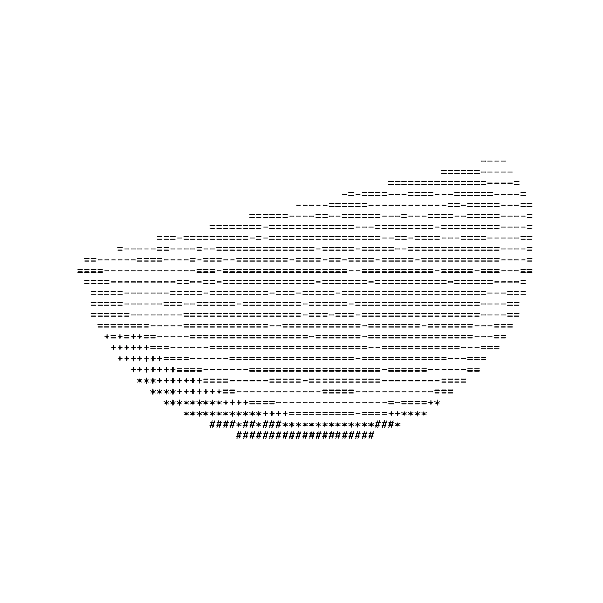

OTRA MIRADA.
OPCIONES DE BUFFET VISUAL
TUS
SESIONES
Cada comida deja un plato.
Vuelve a servirlo cuando quieras.
Recupera tu último menú, reúne tus sesiones o guarda una copia de tus datos.
01 / TUS ARCHIVOS
¿Qué quieres
volver a servir?
02 / TU HISTORIAL
Tu mesa
sigue aquí.
Consultando las sesiones...